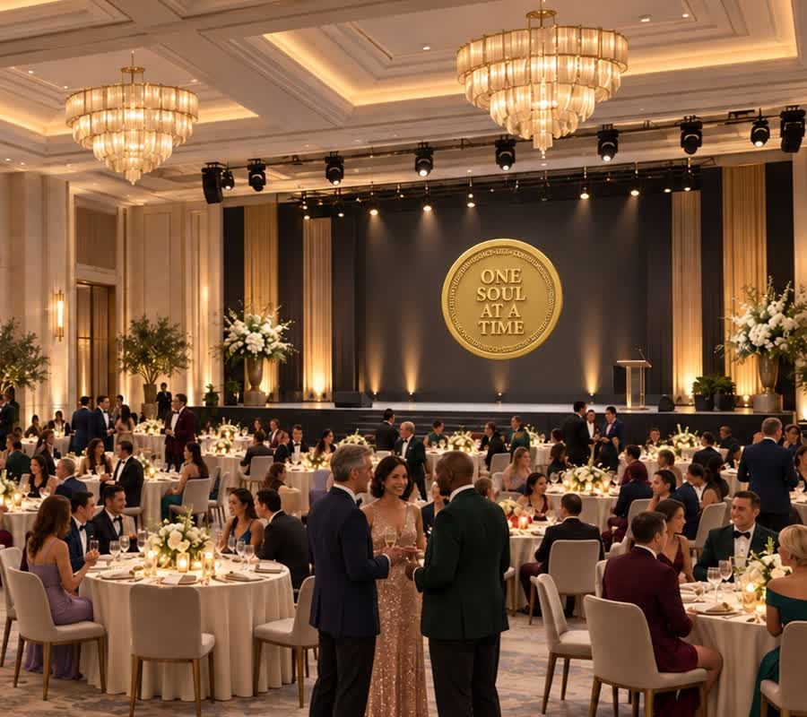
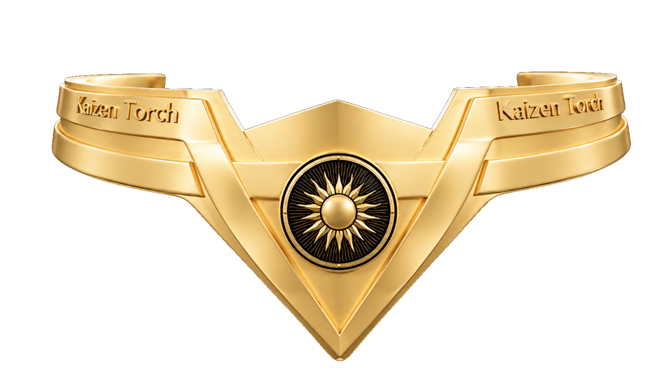
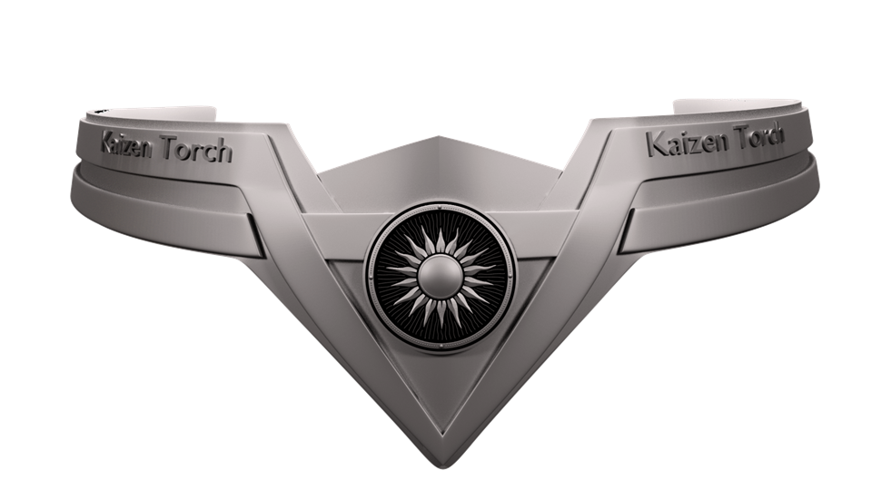
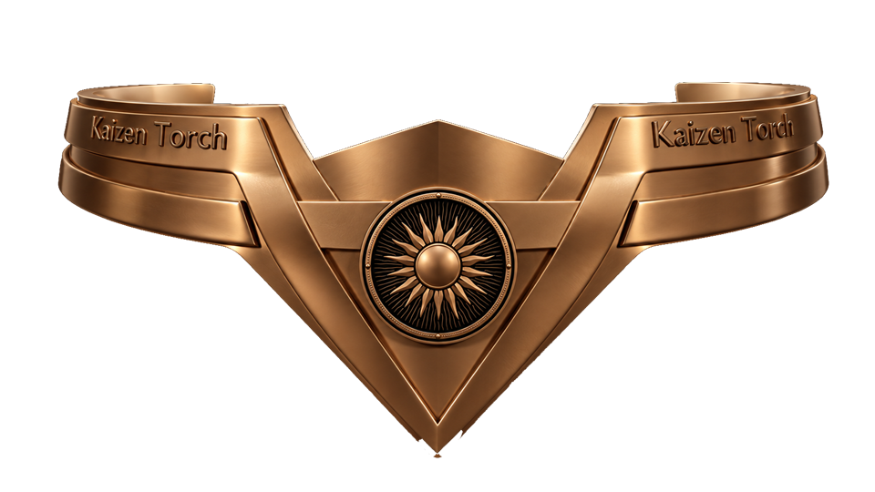

kaizentorch
Gold Winner
♥✦↗
Inaugural Awards · 2026 — 2027
Celebrating coaches who help lives change every single day. Share the impact of your work and show the world what coaching can make possible.
Our belief
The Kaizen Torch Awards were created for the coaches who help others every single day. We believe the work you do deserves to be seen, celebrated, and shared — and that the stories of winning entries can help make the world we live in a little bit better.
Our purpose
Every day, coaches help people find their way forward in life, health, business and organisations. Much of that work happens quietly. One conversation. One breakthrough. One soul at a time.
Through the stories of winning entries, we want to make coaching’s impact visible and inspire people to see what is possible in their own lives.
Celebrate thoughtful practice and meaningful impact, encouraging excellence across the profession.
Honour the people supporting growth and transformation every day, often beyond the spotlight.

Our ambition
To become the
a global celebration of coaching excellence and human possibility.
Every story we share could be the beginning of someone else’s transformation.
Why enter
You see the moments that matter: someone finding their confidence, a leader changing how they lead, a team learning to move forward together. Entering is an opportunity to bring that work into view.
Put the quality, care and impact of your coaching before experienced judges. An award distinction can give prospective clients and organisations another reason to take a closer look at your practice.
We want to share the stories of winning entries to show people that change is possible for them too. What you help one person discover could give another the courage to begin.
Your entry contributes to a wider conversation about thoughtful practice, evidence and meaningful change, recognising work delivered with care, commitment and integrity.
The recognition
From the shortlist to Gold, Silver and Bronze distinctions, recognition is earned through independent assessment of your coaching work and its demonstrated impact.



The Kaizen Torch crown. A symbol of earned achievement.
An anchor for the days you need to remember — a reminder of how far you have come and the lives you have helped change.
Tap to flipEvery award winner receives a digital Certificate of Achievement.
Recognition on the Kaizen Torch Awards website and an individual recognition post on Kaizen Torch’s social media.
No payment is required for these benefits. Shortlisted entrants also receive an individual recognition post. Physical crowns, coins and printed certificates are arranged separately.
Award categories
Four award areas. Fifty-six specialisms. Choose one main coaching category per entry, then select all relevant subcategories within it. A subcategory activates when it receives four or more entries.
Key dates
Why trust it?
Our judging panel brings together experienced coaches and practitioners, including doctoral-qualified professionals, ICF Master Certified Coaches and EMCC-accredited practitioners. Each entry is assessed independently by at least four Round 1 jurors, with conflict-of-interest safeguards.
Client Impact / Result
Sustainable Impact
Problem / Challenge
Testimonial / Feedback
The Kaizen Torch Mastermind
44 practitioners. Different cultures, disciplines, experiences and perspectives — brought together by a shared curiosity about human transformation and what we have yet to discover.
Drag to spin · Select a portrait to read more
How to enter
Explore the four main coaching categories and check their eligibility requirements. Your entry may present one particularly impactful client story or coaching work involving multiple clients within a specific niche, supported by clear evidence of outcomes.
Browse categories →Read your category’s entry kit and download the preparation checklist. Explain the challenges your client faced, the coaching you delivered and the results achieved. All submissions must be in English.
Download entry checklist ↓Complete the official submission form and submit by 12 December 2026 at 6:00 p.m. UAE time (UTC+4). Entry is free for applicants who meet the published eligibility requirements. Entry-support calls are optional.
Book an optional call ↗Fictional impact stories
These fictional stories illustrate the kinds of coaching impact we hope to discover and share. All coaches, clients, and circumstances are invented. They are not actual entries, winners, or testimonials.
The living field
Kaizen Torch exists to create spaces, experiences and conversations that invite people to look inward, question what they have accepted as fixed, and reconnect with possibilities they may have forgotten were there. Begin with what speaks to you.
The listening room
Long-form dialogues with coaches, practitioners, and experts: the ideas, questions, and lived experience behind their work, without rushing toward a tidy answer.
A note from the Kaizen Torch team
At the heart of Kaizen Torch is a deep knowing of the power of coaching and the possibilities that open when we reconnect with ourselves.
We know that change can begin within one person and reach far beyond them — into their relationships, their work, their communities, and the lives they touch.
“If we could change ourselves, the tendencies in the world would also change.”
— Mahatma Gandhi
This is why Kaizen Torch exists: to offer spaces where every soul can remember the power they carry within.
Imagine the world we could create together.
The Kaizen Torch Team
The journey with Kaizen Torch
As seen on
Collaboration opportunities
Your organisation can help us recognise meaningful coaching work and share stories that inspire human possibility. Sponsorship and collaboration do not confer award status or influence eligibility, judging, shortlisting or results.
Share the Torch. One soul at a time.
Request the collaboration guide→Before you enter
Guidance on categories, preparing your entry, judging and the Awards timeline.
Still have a question? hello@kaizentorch.com →Entry is free for eligible coaches worldwide. Review your category’s eligibility requirements, prepare your entry and submit by 12 December 2026 at 6:00 p.m. UAE time. Travel, attendance and purchases are optional.
Kaizen Torch Architect